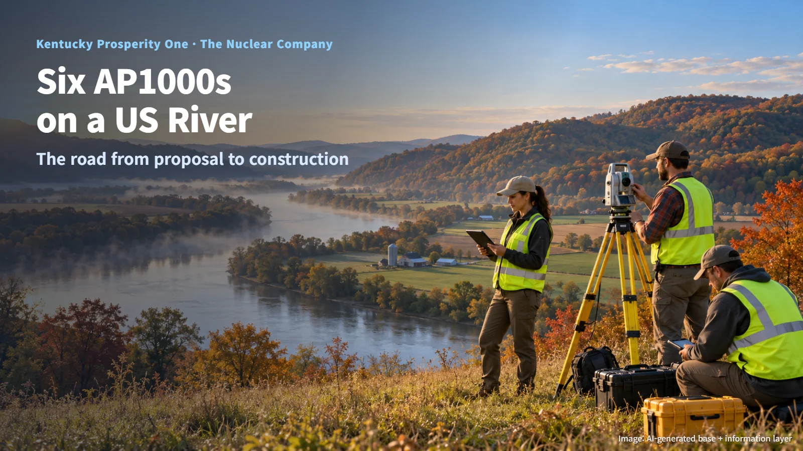
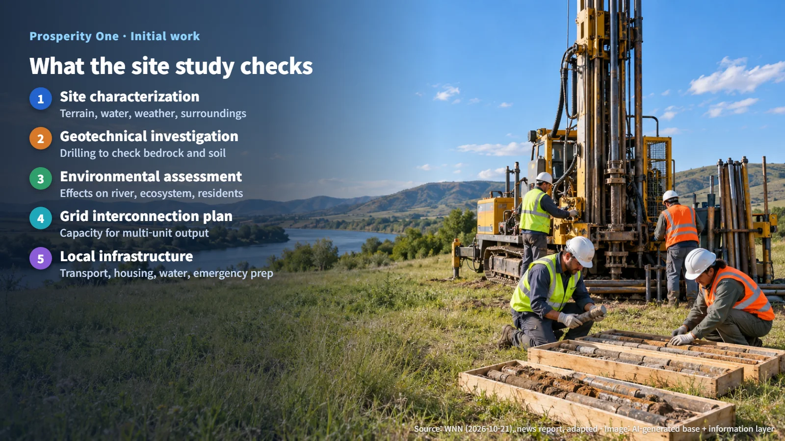
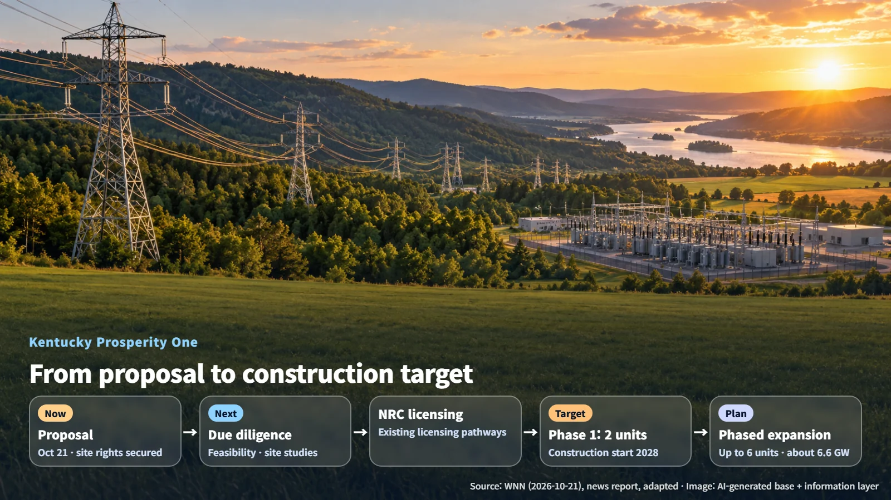

United States · New Nuclear Build
Six AP1000s on a US River: Where Kentucky's Prosperity One Proposal Begins
The Nuclear Company's plan for up to six AP1000 units on the Ohio River starts with site studies, a two-unit first phase and NRC licensing.
News about a new nuclear plant usually arrives with big numbers attached: so many units, so many gigawatts. When the numbers are large, it can feel as if construction is about to start. In practice, a long stretch of preparation comes before the first shovel goes into the ground. The land has to be studied, the connection to the power grid has to be worked out, and the project has to pass review by the regulator. Using a nuclear project proposed in Kentucky on October 21, 2026, as a guide, let's walk through what remains between a proposal and the start of construction.

Up to 6.6 GW Beside the Ohio River
On October 21, the developer, The Nuclear Company, announced that it has proposed the Prosperity One project: up to six AP1000 units, about 6.6 GW in total, near the Ohio River in Lewis County, Kentucky. The AP1000 is a pressurized water reactor (PWR) design, which cools the reactor with water kept under high pressure so that it does not boil.
The developer says it has secured rights to the local site. It plans to lead the project in partnership with the landowner, Sam Howard, and with the local community. The stated purpose of the project is to provide a large source of electricity and, on that basis, build a foundation for industrial investment and local jobs.
Several reactor buildings standing side by side along a broad stretch of river: that is the final picture Prosperity One sets out to create.
Phase 1: Two Units and the Conditions Behind Them
The six units form a long-term plan to be built up over several phases, and the developer's first goal is building two units in Phase 1. Phase 1 is conditioned on site due diligence, confirmation of feasibility and meeting permitting requirements.
Site due diligence is a careful check of the land's condition, the ownership and rights involved, and the surrounding area. A feasibility review asks whether the project works on technical, financial and power-sales grounds. Permitting requirements are the safety and environmental standards the regulator sets. Each condition answers a different question: whether the land is suitable, whether the project adds up, and whether it can meet the rules. Once all three are in place, Phase 1 construction can move onto a real schedule.
Phased development concentrates the studies and permit preparation on the first two units, with the remaining units following in later phases. The first construction work will take place on the site of the two Phase 1 units.
What a Site Investigation Checks
The developer lists its initial work as detailed site characterization, geotechnical investigation, environmental assessment, transmission interconnection planning and preparation for federal nuclear licensing. Here is what each involves.
- Site characterization: A comprehensive record of the terrain, water flows, weather and surroundings, building a kind of health record for the land where the plant will stand.
- Geotechnical investigation: A reactor building is an extremely heavy structure that must also withstand earthquakes. Engineers drill into the ground to confirm that the bedrock and soil layers can carry the load and resist shaking.
- Environmental assessment: An advance evaluation of how construction and operation will affect the river, the ecosystem and the lives of nearby residents.
- Transmission interconnection planning: A check on whether transmission lines and substations have the capacity to carry power from multiple units. At a multi-unit site, this capacity is a key focus of review, because the output of every unit has to reach customers through the same corridor of lines and substations.
The project plan will also look at local infrastructure such as transportation, housing, water supply and emergency preparedness. A nuclear plant needs large amounts of cooling water to turn the steam that has driven its turbines back into water, so a riverside site calls for a close look at both water volume and environmental effects. Routes for moving large components, housing for the construction workforce and systems for protecting residents in an emergency also need to be mapped out in advance.

A drilling rig pulling core samples from deep underground at a riverside site: this is the kind of investigation where the early work begins.
Next Steps: NRC Licensing and a 2028 Construction Target
The company has set a goal of obtaining the approvals needed to start construction in 2028 through the existing licensing pathways of the US Nuclear Regulatory Commission (NRC). Using existing pathways means preparing applications within a review framework that is already in place, with established steps for what the regulator examines and in what order.
The project is currently at the stage of an announced proposal and target. Obtaining a construction permit and reaching financial close (the step that finalizes the agreements that fund the project) are later stages that follow further review and confirmation of commercial terms.
Progress can be tracked at several points: contacts with the NRC and application documents; the actual progress of site investigations and environmental assessment; and the publication of plans for Phase 1 investment, power purchasing, grid interconnection and local infrastructure. The road to the 2028 target is built one document at a time, as filings to the NRC accumulate.

Behind the big numbers in a nuclear project announcement lies a long period of preparation that checks the land, the water, the grid and the community one by one. By following how far that preparation has come, readers can see the meaning of the next announcement much more clearly. The proposal for Prosperity One marks the starting line, and the site studies, NRC filings and Phase 1 plans that follow will show how the project moves toward its 2028 goal.